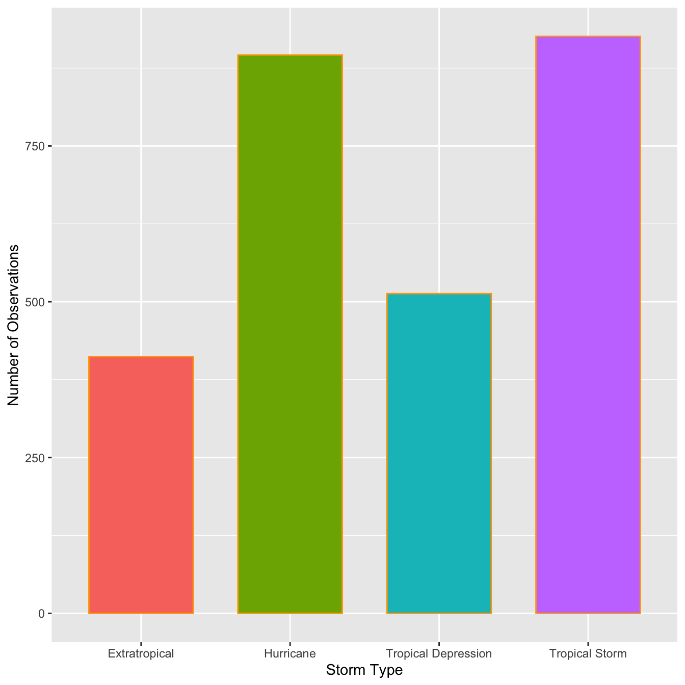
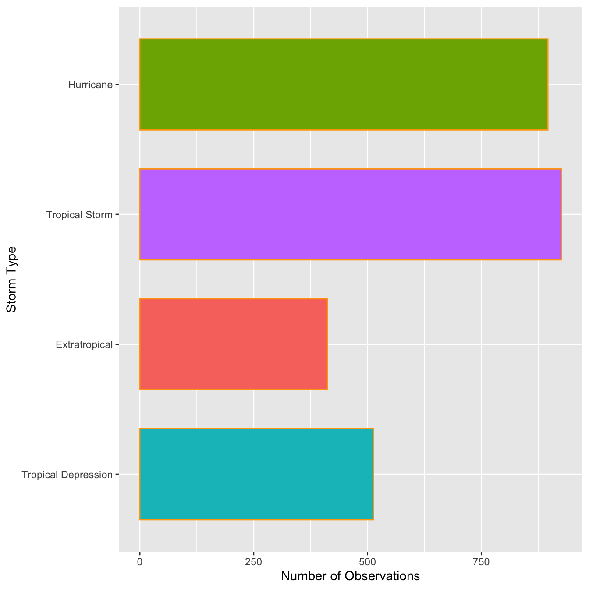
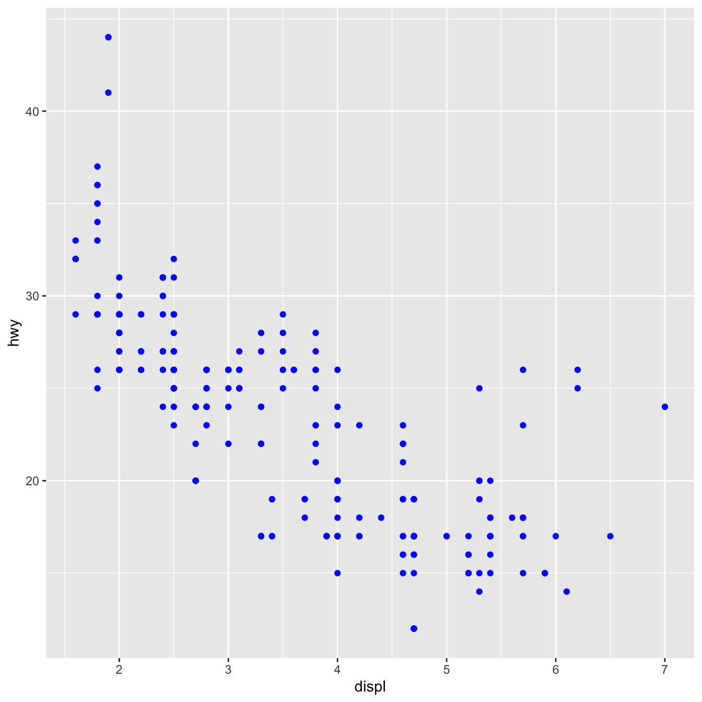
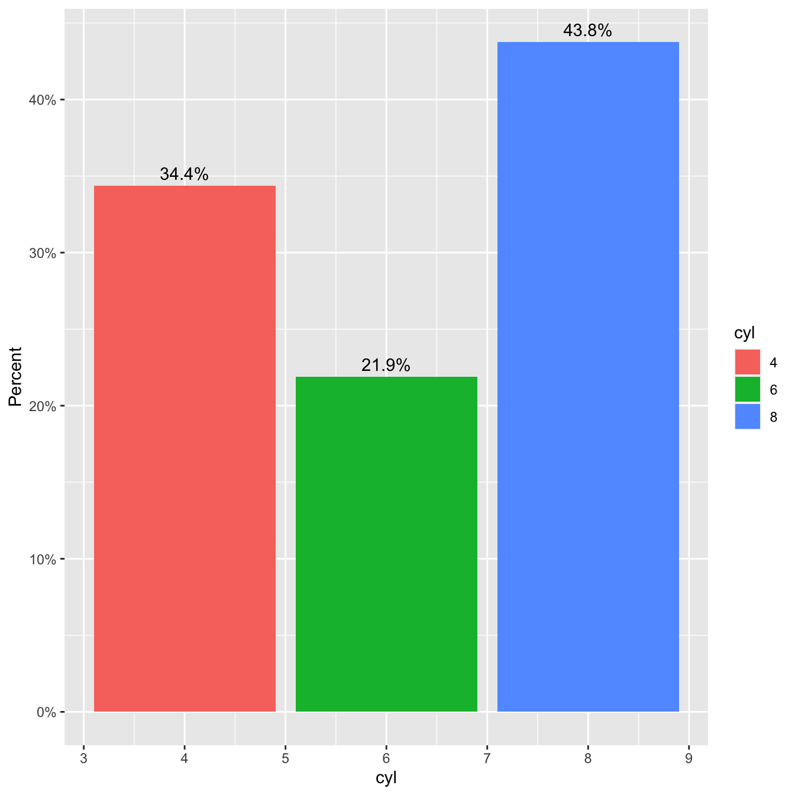
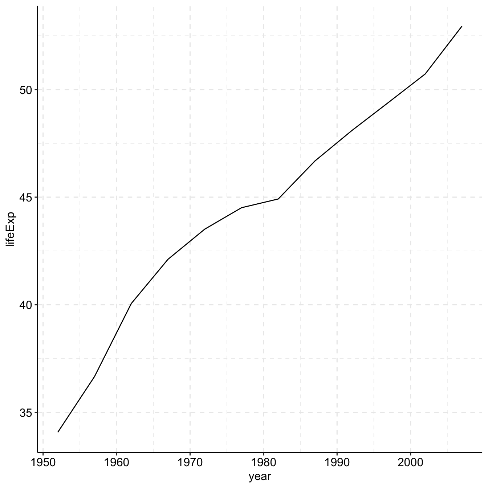
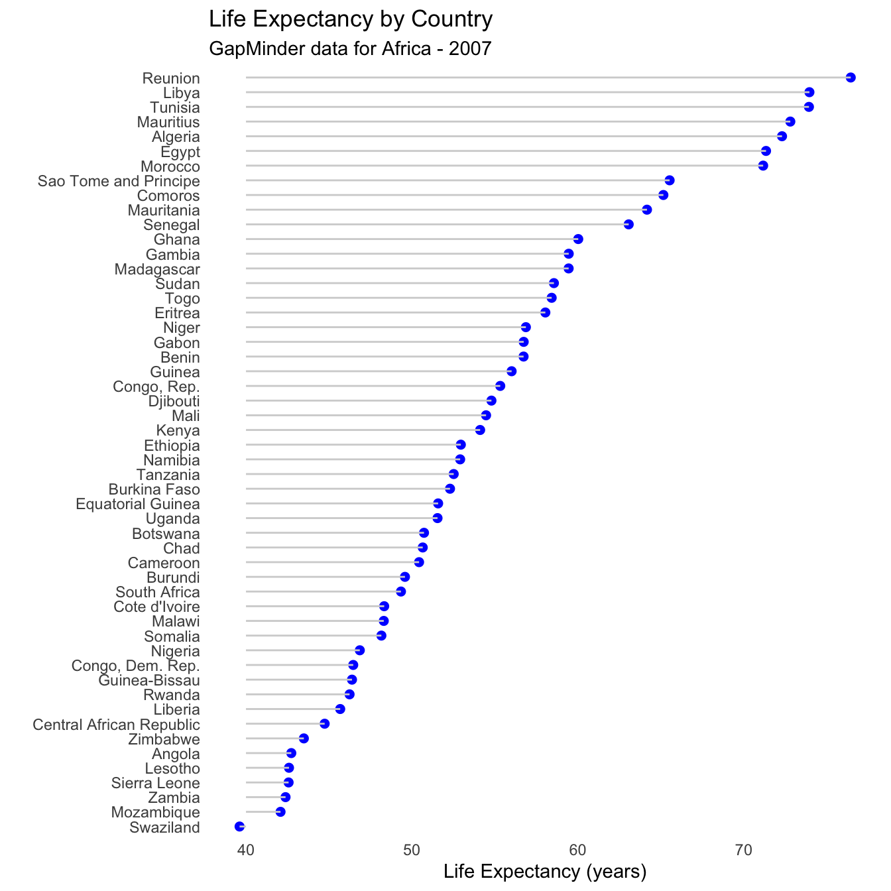

Chapter 4 Data Visualization with R
“The simple graph has brought more information to the data analyst’s mind than any other device.” — John Tukey
This chapter will show you how to use ggplot2 to visualize your data. There are various graphing systems in R, but ggplot2 is one of the most attractive and versatile. ggplot2 implements graphics language, a unified method for describing and creating graphs. By learning one system and using it in multiple locations, you can accomplish more in less time with ggplot2.
4.1 Basics of ggplot2
The tidyverse’s main member, ggplot2, is the subject of this chapter. Load the tidyverse with this code to get access to the datasets, help pages, and functions:
library(tidyverse) # it has ggplot2 package
library(cowplot) # it allows you to save figures in .png fileThat one line of code loads the fundamental tidyverse packages, which are used in practically every data analysis. It also shows you which tidyverse functions clash with base R functions (or from other packages you might have loaded).
If the error message “there is no package called ‘tidyverse’” appears when you execute this code, you must first install it before running library() again.
install.packages("tidyverse")
library(tidyverse)A package only needs to be installed once, but it must be reloaded every time you start a new session.
4.1.1 Importing data
R can read data from a variety of sources, including text files, spreadsheets, statistical packages, and database management systems. We’ll use the mpg dataset to demonstrate these strategies. This dataset comprises data from the US Environmental Protection Agency on 38 different car models.
4.1.1.1 Text files
The readr package provides functions for importing delimited text files into R data frames.
library(readr) # read dataset from file
options(readr.show_col_types = FALSE)
# CSV
mpg_csv <- read_csv("data/mpg.csv")
# TSV
mpg_tsv <- read_tsv("data/mpg.tsv") These functions assume that the variable names are on the first line of data, that values are separated by commas or tabs, and that missing data is represented by blanks.
4.1.1.2 Excel spreadsheets
Data from Excel workbooks can be imported using the readxl program. The formats xls and xlsx are both supported.
library(readxl) # excel
#Excel
mpg_excel <- read_excel("data/mpg.xlsx", sheet='mpg')
head(mpg_excel)## # A tibble: 6 × 12
## ...1 manufacturer model displ year cyl trans drv cty hwy fl class
## <dbl> <chr> <chr> <chr> <dbl> <dbl> <chr> <chr> <dbl> <dbl> <chr> <chr>
## 1 1 audi a4 1,8 1999 4 auto… f 18 29 p comp…
## 2 2 audi a4 1,8 1999 4 manu… f 21 29 p comp…
## 3 3 audi a4 2,0 2008 4 manu… f 20 31 p comp…
## 4 4 audi a4 2,0 2008 4 auto… f 21 30 p comp…
## 5 5 audi a4 2,8 1999 6 auto… f 16 26 p comp…
## 6 6 audi a4 2,8 1999 6 manu… f 18 26 p comp…4.1.1.3 Reading from Statistical packages
The haven package contains functions for importing data from many statistical programs such as SAS, SPSS and Stata.
library(haven) # excel
# SAS
mtcars_sas <- read_sas("data/mtcars.sas7bdat")
# SPSS
mtcars_spss <- read_sav("data/mtcars.sav")
# Stata
mtcars_stata <- read_dta("data/mtcars.dta")
head(mtcars_spss)## # A tibble: 6 × 11
## mpg cyl disp hp drat wt qsec vs am gear carb
## <dbl> <dbl> <dbl> <dbl> <dbl> <dbl> <dbl> <dbl> <dbl> <dbl> <dbl>
## 1 21 6 160 110 3.9 2.62 16.5 0 1 4 4
## 2 21 6 160 110 3.9 2.88 17.0 0 1 4 4
## 3 22.8 4 108 93 3.85 2.32 18.6 1 1 4 1
## 4 21.4 6 258 110 3.08 3.22 19.4 1 0 3 1
## 5 18.7 8 360 175 3.15 3.44 17.0 0 0 3 2
## 6 18.1 6 225 105 2.76 3.46 20.2 1 0 3 14.2 Exploratory data analysis
In his 1977 book “Exploratory Data Analysis,” statistician John Tukey popularized exploratory data analysis (EDA). The overall goal of EDA is to assist us in formulating and refining hypotheses that will lead to useful analyses or additional data collecting. EDA’s main goals are as follows:
- to suggest hypotheses about the causes of observed phenomena,
- to guide the selection of appropriate statistical tools and techniques,
- to assess the assumptions on which statistical analysis will be based,
- to provide a foundation for further data collection.
EDA employs a combination of numerical and visual analytic techniques. Statistical approaches are occasionally used to enhance EDA, although their primary goal is to aid comprehension before moving on to formal statistical modeling.
4.2.1 Statistical variables and data
Statistical variables can be described in a variety of ways depending on how they might be analyzed, quantified, or presented. While it may not be the most fascinating topic, knowing what kind of variables we’re dealing with is critical since it defines how we should visualize the data and, later, how we might analyze it statistically. Statisticians have given considerable effort to how variables should be classified. Although the distinctions can be subtle, we’ll only look at two simple classification approaches.
4.2.1.1 Numeric vs. categorical variables
The values of numeric variables are numbers that describe a measurable amount, such as ‘how many’ or ‘how much.’ Quantitative variables are also known as numeric variables, and the data obtained with numeric variables is referred to as quantitative data. Numeric variables can also be classified as continuous or discrete:
- Continuous numeric variable: Observations can take any value between a certain set of real numbers, i.e. numbers represented with decimals. This set is typically either “every possible number”.
- Discrete numeric variable: Observations can take a value based on a count from a set of whole values; e.g. 1, 2, 3, 4, 5, and so on. A discrete variable cannot take the value of a fraction between one value and the next closest value.
Categorical variables have values that describe a data unit’s characteristic, such as ‘what type’ or ‘which category.’ Mutually exclusive (in one category or another) and exhaustive (containing all conceivable alternatives) categories exist for categorical variables. As a result, categorical variables are qualitative variables with a non-numeric representation. The information gathered for a category variable is qualitative. Ordinal and nominal variables are two types of categorical variables:
- Ordinal variable: Observations can take a value that can be logically ordered or ranked. The categories associated with ordinal variables can be ranked higher or lower than another, but do not necessarily establish a numeric difference between each category.
- Nominal variable: Observations can take a value that is not able to be organised in a logical sequence. Examples of nominal categorical variables include sex, business type, eye colour, religion and brand.
4.2.2 Understanding numerical variables
To explain the key concepts, we’ll use wind and pressure variables using the storms data from the nasaweather package (remember to load and attach the package), we’ll review some basic descriptive statistics and visualisations that are appropriate for numeric variables.
Atmospheric pressure and wind speed are also numerical variables. We have a little more to say. Because zero truly is zero, they are both numeric variables that are measured on a ratio scale: it makes sense to state that 20 mph is twice as fast as 10 mph, and 1000 mbar exerts twice as much pressure on objects as 500 mbar. Are these variables continuous or discrete? Consider the range of possibilities for wind speed and air pressure. Wind speeds of 40.52 mph and atmospheric pressure of 1000.23 mbar are both completely realistic numbers, therefore these are basically continuous variables.
# first 100 values of atmospheric pressure
storms$pressure[1:100]## [1] 1013 1013 1013 1013 1012 1012 1011 1006 1004 1002 1000 998 998 998 987
## [16] 987 984 984 984 984 984 984 981 986 986 986 986 986 986 986
## [31] 1011 1011 1010 1010 1011 1011 1011 1011 1012 1012 1013 1013 1014 1014 1014
## [46] 1014 1013 1010 1007 1003 999 994 990 990 989 987 973 963 963 993
## [61] 1000 1002 1002 1005 1000 997 997 997 997 990 990 990 990 984 984
## [76] 984 984 970 965 965 965 965 965 965 970 995 1012 1012 1009 1005
## [91] 1000 993 985 972 962 959 958 957 959 963# first 100 values of atmospheric pressure
storms$wind[1:100]## [1] 25 25 25 25 25 25 25 30 35 40 45 50 50 55 60 60 60 60
## [19] 60 60 60 60 60 60 55 55 55 50 50 50 25 25 25 25 25 25
## [37] 25 25 25 25 25 25 25 25 25 25 25 25 30 35 40 50 65 65
## [55] 65 70 100 100 90 55 30 20 20 45 50 55 55 55 55 65 65 70
## [73] 70 75 75 75 75 90 95 95 95 95 95 95 90 60 25 25 30 40
## [91] 45 55 70 80 90 95 100 105 105 95Notice that even though pressure is continuous variables it looks like a discrete variable because it has only been measured to the nearest whole millibar. Similarly, wind is only measured to the nearest 5 mph. These differences reflect the limitations of the methodology used to measure each variable, e.g. measuring wind speed is hard because it varies so much in space and time.
We set the properties of the geom_histogram to tweak this kind of thing—the binwidth argument adjusts the width of the bins used. Let’s construct the histogram again with 7 mbar wide bins, as well as adjust the colour scheme and axis labels a bit:
library(nasaweather)
ggplot(storms, aes(x = pressure)) +
geom_histogram(binwidth = 7, fill = "steelblue", colour="darkgrey", alpha = 0.8) +
xlab("Atmospheric Pressure (mbar)") + ylab("Count")ggplot(storms, aes(x = wind)) +
geom_histogram(binwidth = 10, fill = "steelblue", colour="darkgrey", alpha = 0.8) +
xlab("Wind Speed (mph)") + ylab("Count")The only things that changed in this example were the aesthetic mapping and the bin width, which we set to 10. It reveals that the wind speed during a storm tends to be about 40 mph, though the range of wind speeds is about 100 mph and the shape of the distribution is asymmetric.
We have to choose the bin widths carefully. Remember that wind speed is measured to the nearest 5 mph. This means we should choose a bin width that is a multiple of 5 to produce a meaningful histogram. Look what happens if we set the bin width to 3:
ggplot(storms, aes(x = wind)) +
geom_histogram(binwidth = 5, fill = "steelblue", colour="darkgrey", alpha = 0.8) +
xlab("Wind Speed (mph)") + ylab("Count")We end up with gaps in the histogram because some intervals do not include multiples of 5. This is not a good histogram because it fails to reliably summarise the distribution. Similar problems would occur if we chose a bin width that is greater than, but not a multiple of 5, because different bins would cover a different number of values that make up the wind variable. The take home message is that we have to know our data in order to produce meaningful summaries of it.
Histograms are good for visualising sample distributions when we have a reasonable sample size (at least dozens, and ideally, hundreds of observations). They aren’t very effective when the sample is quite small. In this ‘small data’ situation it’s better to use something called a dot plot
Let’s use dplyr to extract a small(ish) subset of the storms data:
storms_small <-
storms %>%
filter(year == 1998, type == "Hurricane")This just extracts the subset of hurricane observations from 1998. The ggplot2 code to make a dot plot with these data is very similar to the histogram case:
ggplot(storms_small, aes(x = pressure,fill='red')) +
geom_dotplot(binwidth = 2, color='blue') +
xlab("Atmospheric Pressure (mbar)") + ylab("Count") Here, each observation in the data adds one dot, and dots that fall into the same bin are stacked up on top of one another. The resulting plot displays the same information about a sample distribution as a histogram, but it tends to be more informative when there are relatively few observations.
Here, each observation in the data adds one dot, and dots that fall into the same bin are stacked up on top of one another. The resulting plot displays the same information about a sample distribution as a histogram, but it tends to be more informative when there are relatively few observations.
4.2.3 Understanding categorical variables
Exploring categorical variables is generally simpler than working with numeric variables because we have fewer options, or at least life is simpler if we only require basic summaries. We’ll work with the year and type variables in storms to illustrate the key ideas.
Which kind of categorical variable is type? There are four storm categories in type. We can use the unique function to print these for us:
unique(storms$type)## [1] "Tropical Depression" "Tropical Storm" "Hurricane"
## [4] "Extratropical"When we calculate summaries of categorical variables we are aiming to describe the sample distribution of the variable, just as with numeric variables. The general question we need to address is, ‘what are the relative frequencies of different categories?’ We need to understand which categories are common and which are rare. Since a categorical variable takes a finite number of possible values, the simplest thing to do is tabulate the number of occurrences of each type. We’ve seen how the table function is used to do this:
table(storms$type)##
## Extratropical Hurricane Tropical Depression Tropical Storm
## 412 896 513 926This shows that the number of observations associated with hurricanes and tropical storms are about equal, that the number of observations associated with extratropical and tropical systems is similar, and the former pair of categories are more common than the latter. This indicates that in general, storm systems in Central America spend relatively more time in the more severe classes.
Raw frequencies give us information about the rates of occurance of different categories in a dataset. However, it’s difficult to compare raw counts across different data sets if the sample sizes vary (which they usually do). This is why we often convert counts to proportions. To do this, we have to divide each count by the total count across all categories. This is easy to do in R because it’s vectorised:
type_counts <- table(storms$type)
type_counts / sum(type_counts)##
## Extratropical Hurricane Tropical Depression Tropical Storm
## 0.1499818 0.3261740 0.1867492 0.3370950So about 2/3 of observations are associated with hurricanes and tropical storms, with a roughly equal split, and the remaining 1/3 associated with less severe storms.
ggplot(storms, aes(x = type,fill=type)) +
geom_bar(color = "orange", width = 0.7, show.legend = F) +
xlab("Storm Type") + ylab("Number of Observations")
This is the same summary information we produced using the table function, only now it’s presented in graphical form. We can customized the bar graph with functions like xlab and ylab, and by setting various properties inside geom_bar.
The categories of type have quite long names, meaning the axis labels are all bunched together. One way to fix this is to make the labels smaller or rotate them via the ‘themes’ system. Here’s an alternative solution: just flip the x and y axes to make a horizontal bar chart. We can do this with the coord_flip function (this is new):
ords <- c("Tropical Depression", "Extratropical", "Tropical Storm", "Hurricane")
ggplot(storms, aes(x = type,fill=type)) +
geom_bar(color = "orange", width = 0.7, show.legend = F) +
scale_x_discrete(limits = ords) +
coord_flip() +
xlab("Storm Type") + ylab("Number of Observations")
ggplot(data=storms, aes(x=type,fill=type))+
geom_bar(color='orange',width = 0.7,show.legend = F)+
coord_polar()+
labs(x=NULL, y= NULL)4.2.4 Scatter plot
The first function in building a graph is the ggplot function. It specifies the
- data frame containing the data to be plotted
- the mapping of the variables to visual properties of the graph. The mappings are placed within the
aesfunction (whereaesstands for aesthetics).
library(tidyverse)
library(ggplot2)
library(readr)
# df
df <- read_csv("data/mpg.csv")
ggplot(data = df) +
geom_point(mapping = aes(x = displ, y = hwy))
The graph demonstrates that engine size (displ) and fuel efficiency have a negative relationship (hwy). To put it another way, cars with large engines consume more fuel. Does this support or disprove your hypothesis concerning engine size and fuel efficiency?
The function ggplot2 is used to start a plot in ggplot2(). ggplot() builds a coordinate system to which layers can be added. The dataset to utilize in the graph is the first parameter to ggplot(). So ggplot(data = mpg_csv) produces an empty graph, which I won’t show here because it’s not that interesting.
By matching the aesthetics of your plot to the variables in your dataset, you may convey information about your data. You can, for example, link the colors of your points to the class variable to reveal each car’s class.
library(tidyverse)
library(ggplot2)
library(readr) # read dataset from file
# df
df <- read_csv("data/mpg.csv")
ggplot(data = df) +
geom_point(mapping = aes(x = displ, y = hwy, color=class))You can also set the aesthetic properties of your geom manually. For example, we can make all of the points in our plot blue:
library(tidyverse)
library(ggplot2)
library(readr) # read dataset from file
# df
df <- read_csv("data/mpg.csv")
ggplot(data = df) +
geom_point(mapping = aes(x = displ, y = hwy), color="blue")
The color modifies the appearance of the plot rather than conveying information about a variable. Set the aesthetic by name as an argument of your geom function to manually set an aesthetic; i.e. it goes outside of aes(). You’ll need to choose a level that fits that aesthetic:
- The name of a color as a character string.
- The size of a point in mm.
- The shape of a point as a number
Facets in ggplot2:
Splitting your plot into facets, or subplots that each display one subset of the data, is another option, especially for categorical variables. Use facet_wrap() to facet your plot by a single variable. facet_wrap() expects a formula as the first input, followed by a variable name (note that “formula” is the name of a data structure in R, not a synonym for “equation”). facet_wrap() expects a discrete variable as a parameter.
library(tidyverse)
library(ggplot2)
library(readr)
# df
df <- read_csv("data/mpg.csv")
ggplot(data = df) +
geom_point(mapping = aes(x = displ, y = hwy, color=class))+
facet_wrap(~ manufacturer, nrow = 3)
Add facet_grid() to your plot call to facet your plot on the combination of two variables. Facet grid(first )’s parameter is likewise a formula. The formula should now have two variable names separated by a comma.
library(tidyverse)
library(ggplot2)
library(readr) # read dataset from file
library(ggpubr)
# df
df <- read_csv("data/mpg.csv")
ggplot(data = df) +
geom_point(mapping = aes(x = displ, y = hwy, color=class))+
facet_grid( drv ~ cyl)Note: Use a . instead of a variable name if you don’t want to facet in the rows or columns dimension, e.g. + facet grid(. ~ cyl).
library(tidyverse)
library(ggplot2)
library(readr) # read dataset from file
# df
df <- read_csv("data/mpg.csv")
ggplot(data = df) +
geom_point(mapping = aes(x = displ, y = hwy, color=class))+
facet_grid(. ~ cyl) Geometric objects:_
Geometric objects:_
A geom is a geometrical object used to represent data in a plot. Plots are frequently described by the sort of geom they employ. Bar charts, for example, use bar geoms, line charts use line geoms, and boxplots use boxplot geoms. Scatterplots use the point geom to break the trend. As we’ve seen, different __geoms_ can be used to plot the same data. The point geom is used for scatter plot, and the smooth geom, a smooth line suited to the data.To display multiple geoms in the same plot, add multiple geom functions to ggplot() as shown blow:
library(tidyverse)
library(readr) # read dataset from file
library(ggpubr)
# df
df <- read_csv("data/mpg.csv")
ggplot(data = df, mapping = aes(x = displ, y = hwy)) +
geom_point(mapping = aes(color = class)) +
geom_smooth()+
labs(title = "Relationship between displacment and highway of 38 different car models",
subtitle = "Feul economy data from 1999 to 2008",
caption = "source: https://fueleconomy.gov/",
x = "Engine displacement in liters",
y = "Highway mileage",
color = "vehicle class")+
theme_pubr()+
grids(linetype = "dashed")+
theme(axis.text.x = element_text(colour = "grey20", size = 8, angle = 45, hjust = 0.5, vjust = 0.5),
axis.text.y = element_text(colour = "grey20", size = 12),
strip.text = element_text(face = "italic"),
text = element_text(size = 12))Exercise
# add facet wrap using manufacturer variable
library(tidyverse)
library(ggplot2)
library(readr) # read dataset from file
# df
df <- read_csv("data/mpg.csv")
ggplot(data = df, mapping = aes(x = displ, y = hwy)) +
geom_point(mapping = aes(color = class)) +
geom_smooth(method = 'loess')+
labs(title = "Relationship between displacment and highway of 38 different car models",
subtitle = "Feul economy data from 1999 to 2008",
caption = "source: https://fueleconomy.gov/",
x = "Engine displacement in liters",
y = "Highway mileage",
color = "vehicle class")+
theme_pubr()+
grids(linetype = "dashed")+
theme(axis.text.x = element_text(colour = "grey20", size = 8, angle = 45, hjust = 0.5, vjust = 0.5),
axis.text.y = element_text(colour = "grey20", size = 12),
strip.text = element_text(face = "italic"),
text = element_text(size = 12))library(tidyverse)
library(ggplot2)
library(readr) # read dataset from file
# df
df <- read_csv("data/mpg.csv")
ggplot(data = df, mapping = aes(x = displ, y = hwy)) +
geom_point(mapping = aes(color = class)) +
geom_smooth(method = 'loess')+
facet_wrap(~manufacturer)+
labs(title = "Relationship between displacment and highway of 38 different car models",
subtitle = "Feul economy data from 1999 to 2008",
caption = "source: https://fueleconomy.gov/",
x = "Engine displacement in liters",
y = "Highway mileage",
color = "vehicle class")+
theme_pubr()+
grids(linetype = "dashed")+
theme(axis.text.x = element_text(colour = "grey20", size = 8, angle = 45, hjust = 0.5, vjust = 0.5),
axis.text.y = element_text(colour = "grey20", size = 12),
strip.text = element_text(face = "italic"),
text = element_text(size = 12))4.2.5 Bar Plot
Stacked, clustered, or segmented bar charts are commonly used to show the relationship between two categorical variables.
4.2.5.1 Stacked bar chart
For the autos in the Fuel economy dataset, plot the association between automotive class and drive type (front-wheel, rear-wheel, or 4-wheel drive).
library(tidyverse)
library(ggplot2)
library(readr) # read dataset from file
# df
df <- read_csv("data/mpg.csv")
ggplot(data = df, mapping = aes(x = class, fill=drv)) +
geom_bar(position = "stack") +
labs(title = "Vehicle class frequency by drive type for 38 different automobile models",
subtitle = "Feul economy data from 1999 to 2008",
caption = "source: https://fueleconomy.gov/",
x = "vehicle class",
y = "Count")+
theme_pubclean()+
grids(linetype = "dashed")+
guides(fill=guide_legend("Drive Type"))+
theme(axis.text.x = element_text(colour = "grey20", size = 8, angle = 45, hjust = 0.5, vjust = 0.5),
axis.text.y = element_text(colour = "grey20", size = 12),
strip.text = element_text(face = "italic"),
text = element_text(size = 12))
4.2.5.2 Grouped bar chart
library(tidyverse)
library(ggplot2)
library(readr) # read dataset from file
# df
df <- read_csv("data/mpg.csv")
ggplot(data = df, mapping = aes(x = class, fill=drv)) +
geom_bar(position = "dodge") +
labs(title = "Vehicle class frequency by drive type for 38 different automobile models",
subtitle = "Feul economy data from 1999 to 2008",
caption = "source: https://fueleconomy.gov/",
x = "vehicle class",
y = "Count")+
theme_pubclean()+
grids(linetype = "dashed")+
guides(fill=guide_legend("Drive Type"))+
theme(axis.text.x = element_text(colour = "grey20", size = 8, angle = 45, hjust = 0.5, vjust = 0.5),
axis.text.y = element_text(colour = "grey20", size = 12),
strip.text = element_text(face = "italic"),
text = element_text(size = 12))
Notice that front-wheel drive is standard on all Minivans. Zero count bars are removed by default, and the remaining bars are made broader. This may not be the desired behavior. The position = position dodge(preserve = "single") option can be used to change this.
library(tidyverse)
library(ggplot2)
library(readr) # read dataset from file
library(ggthemes)
library(ggpubr)
# df
df <- read_csv("data/mpg.csv")
ggplot(data = df, mapping = aes(x = class, fill=drv)) +
geom_bar(position = position_dodge(preserve = "single")) +
labs(title = "Vehicle class frequency by drive type for 38 different automobile models",
subtitle = "Feul economy data from 1999 to 2008",
caption = "source: https://fueleconomy.gov/",
x = "vehicle class",
y = "Count",
fill="Drive type")+
theme_pubclean()+
grids(linetype = "dashed")+
theme(axis.text.x = element_text(colour = "grey20", size = 8, angle = 90, hjust = 0.5, vjust = 0.5),
axis.text.y = element_text(colour = "grey20", size = 12),
strip.text = element_text(face = "italic"),
text = element_text(size = 12))
4.2.5.3 Bar chart with percentages
bar_perc <- mtcars %>%
count(cyl) %>%
mutate(
perc = round(proportions(n) * 100, 1),
res = str_c(n, "(", perc, ")%"),
cyl = as.factor(cyl)
)
ggplot(bar_perc, aes(cyl, n, fill = cyl)) +
geom_col() +
geom_text(aes(label = res), vjust = -0.5)library(dplyr)
library(ggplot2)
library(tidyr)
library(scales) # for percentage scales
ggplot(mtcars, aes(x=cyl)) +
geom_bar(aes(y = after_stat(prop), fill = factor(after_stat(x))), stat="count") +
geom_text(aes( label = scales::percent(after_stat(prop)),
y= after_stat(prop) ),
stat= "count",
vjust = -.5) +
labs(y = "Percent", fill="cyl") +
scale_y_continuous(labels = scales::percent)
4.3 Boxplots
A boxplot displays the \(25^{th}\) percentile, median, and \(75^{th}\) percentile of a distribution. The whiskers (vertical lines) capture roughly 99% of a normal distribution, and observations outside this range are plotted as points representing outliers (see the figure below).

Boxplot schematics
We can use boxplots to visualize the distribution of weight within each species:
library(tidyverse)
#read the visual treatment for patients dataset
df_vt <- read_csv("./data/visual_treatment.csv")
ggplot(data = df_vt,
mapping = aes(x = Day, y = Value, color=Day)) +
geom_boxplot(alpha=0.5)+
ggtitle('Visual improvement after treatment')
- R appears to be unaware that the order should be One -> Two -> Three. Because the column Day is shown as chr>, which indicates character, R chose to follow the alphabetical order.
- When you want to display characters in a non-alphabetical order, factors are crucial. Factors are variables with a small number of possible values.
- Individual data can sometimes be plotted on top of the boxplot. This can be accomplished in a variety of ways.
- Using geom jitter(), here is a simple solution. For more information, type ?geom_jitter.
library(tidyverse)
library(ggthemes)
library(ggpubr)
#read the visual treatment for patients dataset
df_vt <- read_csv("./data/visual_treatment.csv")
# ordering the treatment
df_vt$Day <- factor(df_vt$Day, levels=c("One","Two","Three"))
ggplot(data = df_vt,
mapping = aes(x = Day, y = Value, color=Day)) +
geom_boxplot(alpha=0.5)+
geom_jitter(width=0.15)+ # show individual data
theme_pubclean()+ # change theme
grids(linetype = "dashed")+ # modify grids type
ggtitle('Visual improvement after treatment')+ # add title
theme(axis.text.x = element_text(colour = "grey20", size = 8, angle = 0, hjust = 0.5, vjust = 0.5),
axis.text.y = element_text(colour = "grey20", size = 12),
strip.text = element_text(face = "italic"),
text = element_text(size = 12))4.4 Plotting time series data
Let’s calculate number of counts per year for each genus. First we need to group the data and count records within each group:
4.5 Line Plot
data(country.map, package = "choroplethrMaps")
head(unique(country.map$region), 30)## [1] "afghanistan" "angola" "azerbaijan" "moldova" "madagascar"
## [6] "mexico" "macedonia" "mali" "myanmar" "montenegro"
## [11] "mongolia" "mozambique" "mauritania" "burundi" "malawi"
## [16] "malaysia" "namibia" "france" "niger" "nigeria"
## [21] "nicaragua" "netherlands" "norway" "nepal" "belgium"
## [26] "new zealand" "oman" "pakistan" "panama" "peru"library(readr)
library(tidyverse)
gap <- read_csv("data/gapminder.csv")
# Select US cases
library(dplyr)
plotdata <- filter(gap,
country == "Ethiopia")
# simple line plot
ggplot(plotdata,
aes(x = year,
y = lifeExp)) +
geom_line()+
theme_pubr()+
grids(linetype = "dashed")
library(ggplot2)
library(ggthemes)
gap <- read_csv("data/gapminder.csv")
# line plot with points
# and improved labeling
ggplot(plotdata,
aes(x = year,
y = lifeExp)) +
geom_line(size = 1.5,
color = "lightgrey") +
geom_point(size = 3,
color = "steelblue") +
labs(y = "Life Expectancy (years)",
x = "Year",
title = "Life expectancy changes over time",
subtitle = "Ethiopia (1952-2007)",
caption = "Source: http://www.gapminder.org/data/")+
theme_pubclean()+
grids(linetype = "dashed")# prepare dataset
data(gapminder, package = "gapminder")
plotdata <- gapminder %>%
filter(year == 2007) %>%
rename(region = country,
value = lifeExp) %>%
mutate(region = tolower(region)) %>%
mutate(region = recode(region,
"united states" = "united states of america",
"congo, dem. rep." = "democratic republic of the congo",
"congo, rep." = "republic of congo",
"korea, dem. rep." = "south korea",
"korea. rep." = "north korea",
"tanzania" = "united republic of tanzania",
"serbia" = "republic of serbia",
"slovak republic" = "slovakia",
"ethiopia" = "democratic republic of ethiopia",
"yemen, rep." = "yemen"))Now lets create the map
4.6 Histograpm
Marriage <- read_csv("data/marriage.csv")
# plot the histogram with a binwidth of 5
ggplot(Marriage, aes(x = age)) +
geom_histogram(fill = "cornflowerblue",
color = "white",
binwidth = 5) +
labs(title="Participants by age",
subtitle = "binwidth = 5 years",
x = "Age")data(gapminder, package="gapminder")
# subset Asian countries in 2007
library(dplyr)
plotdata <- gapminder %>%
filter(continent == "Africa" &
year == 2007)
# Sorted Cleveland plot
ggplot(plotdata,
aes(x=lifeExp,
y=reorder(country, lifeExp))) +
geom_point(color="blue",
size = 2) +
geom_segment(aes(x = 40,
xend = lifeExp,
y = reorder(country, lifeExp),
yend = reorder(country, lifeExp)),
color = "lightgrey") +
labs (x = "Life Expectancy (years)",
y = "",
title = "Life Expectancy by Country",
subtitle = "GapMinder data for Africa - 2007") +
theme_minimal() +
theme(panel.grid.major = element_blank(),
panel.grid.minor = element_blank())
- Reunion clearly has the highest life expectancy, while Afghanistan has the lowest by far. This last plot is also called a lollipop graph (you can see why).
4.7 Arranging plots into a grid
The cowplot package provides the function plot_grid() to arrange plots into a grid and label them.
p1 <- ggplot(mtcars, aes(disp, mpg, color=as.factor(cyl))) +
geom_point()+
labs(
x='Engine displament in litters',
y= "Mileage Per Hour",
color="Vehicle Cylinder Type")+
theme_cowplot()+
theme(axis.text.x = element_text(color='grey20',
size=10,
angle = 0,
hjust=0.5,
vjust=0.5),
axis.text.y = element_text(color='grey20',
size=12),
strip.text = element_text(face='italic'),
text = element_text(size=12))
p2 <- ggplot(mtcars, aes(qsec, mpg, color=as.factor(cyl))) +
geom_point()+
labs(
caption = 'Souce: https://fueleconomy.gov',
x='Engine displament in litters',
y= "Mileage Per Hour",
color="Vehicle Cylider Type")+
theme_cowplot()+
theme(axis.text.x = element_text(color='grey20',
size=10,
angle = 0,
hjust=0.5,
vjust=0.5),
axis.text.y = element_text(color='grey20',
size=12),
strip.text = element_text(face='italic'),
text = element_text(size=12))
plot_grid(p1, p2, labels = c('A', 'B'), label_size = 12,ncol = 2, align = "h")